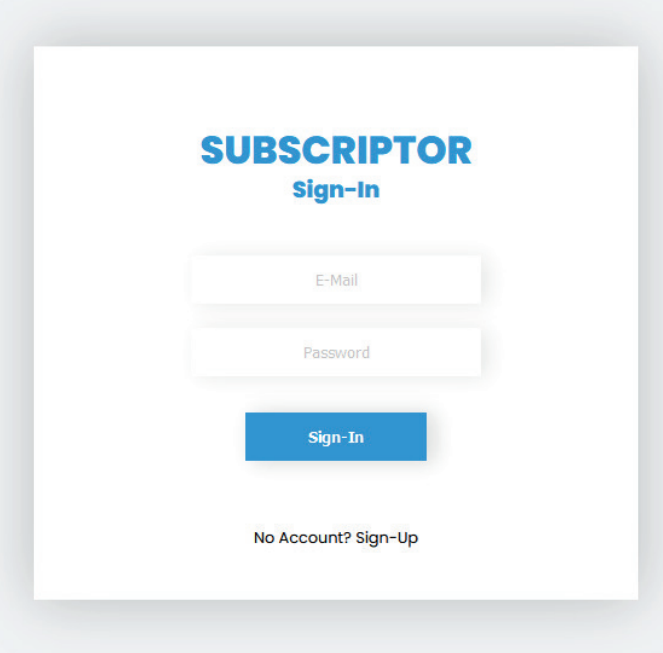
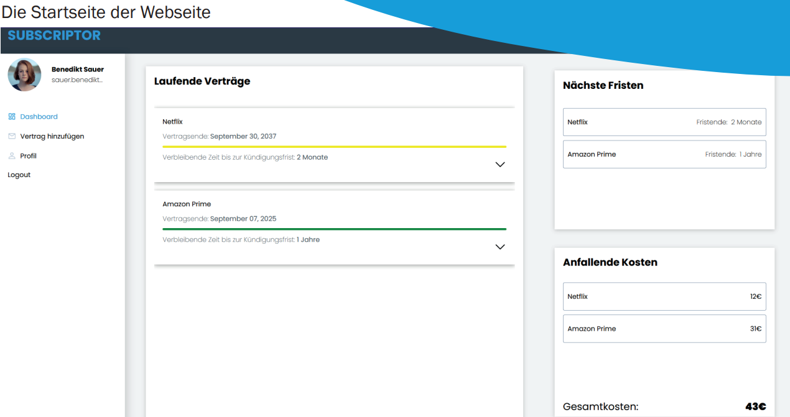
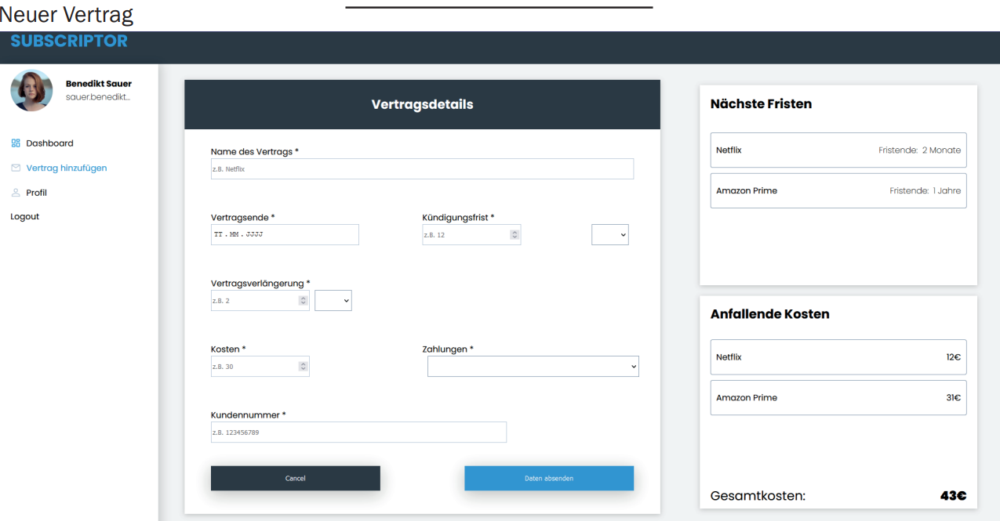

back
Subscriptor
Die Grundidee ...
... hinter diesem Projekt, war das Praktikum welches ich im Sommer 2021 bei Sascha Nos vollbracht habe.
Dort sollte ich eine Webseite enwtickeln, in der man seine Abonnements hinzufügen und verwalten kann. Dazu ein Notificationsystem, welches den Benutzer in Echtzeit über die neuesten Updates seiner Abonnements informiert.
Leider ist der Sourcode privat und die Seite zu diesem Zeitpunkt immer mal wieder nicht erreichbar. Deswegen hier ein paar Bilder der Webseite aus meinem Praktikumsbericht.
Entwickelt mit:


 , Axios
, Axios


